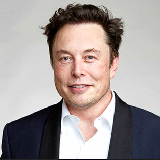

Elon Musk

Summary
Elon Musk is a visionary entrepreneur known for his leadership in electric
vehicles (Tesla), SpaceX, SolarCity, Twitter and Paypal
Education
-
Queen's University (Canada): Musk attended Queen's University in
Kingston, Ontario, Canada, from 1989 to 1992, studying physics.
-
University of Pennsylvania: Bachelor of Science in Physics and Bachelor
of Science in Economics
Work Experience
-
Zip2 Corporation
1995-1999
-
Musk co-founded Zip2, an online city guide software company, which
was eventually sold to Compaq for over $300 million.
-
X.com and PayPal
1999-2002
-
After Zip2, Musk founded X.com, an online payment company. It later
became PayPal after a merger. PayPal was sold to eBay for $1.5
billion in stock in 2002, with Musk receiving $165 million from the
sale.
-
OpenAI
2015-present
-
Musk co-founded OpenAI, an artificial intelligence research
organization aimed at ensuring that AI benefits all of humanity.
Skills
- Innovation: ⭐️⭐️⭐️⭐️⭐️
- Strategic Thinking: ⭐️⭐️⭐️⭐️⭐️
- Entrepreneurship: ⭐️⭐️⭐️⭐️⭐️
Awards and Certifications
- World Technology Award for Transportation Technology (2015): Awarded for pioneering electric vehicles and sustainable transportation solutions with Tesla.
- Axel Springer Award (2020): Honored for his entrepreneurial spirit and innovative achievements in technology and space exploration.
Other
© Gigi Natroshvili. All rights reserved.